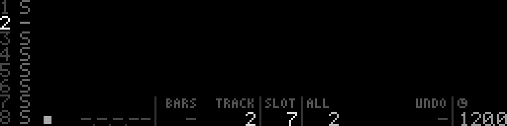

- Tracks
- 8
- Loop slots per track
- 8
- Undos per slot
- Up to 99
- Optional autosave
- microSD
- Ticks per quarter note
- 192
- SSD1322 OLED
- 256 × 64
- External PSRAM
- 8 MB
- External MIDI interface option
- 8 in / 8 out
Quick guides
Keep playing, keep the vibe
The inspiration was Cubase on an Atari. You sat down, the ideas went straight in, and the machine seemed to disappear. That’s the feeling behind MidiLooper. “One hand on the device, attention on the music.”
When a loop comes round and you can already hear the next part in your head, hit Record and play it. If the loop felt better before the overdub, undo it while you listen. Bring it back if you miss it. The dream is to catch a whole jam that way and shape it into a song while you can still feel what made it work.
Each track plays one of its eight loop slots. A slot keeps its loop and undo history. A set holds all eight tracks. Save a milestone when you hear a version of the set you want to come back to.
Hardware requirements
The reference instrument uses a Teensy 4.1, 8 MB of external PSRAM, a 256 × 64 SSD1322 OLED and a microSD card for saving. A push encoder adjusts notes and groove settings. A MIDI controller supplies the recording and transport buttons. The DROID setup adds a grid and four motorized faders.
From the device
Read the OLED
Find the selected slot, read the piano roll and recognize a completed save.
Open the screen guide →